学习几何初步知识，培养初步的空间观念 [1]
几何初步知识主要是培养学生的空间观念。进行几何初步知识教学时应密切联系学生的生活实际，遵循儿童的认识规律，充分利用和创造各种条件，引导学生通过对物体、模型等的观察、测量、拼摆、画图、制作、实验等活动，掌握形体的基本特征和面积、体积的计算方法，并且注意在实际生活中的应用。
平面图形
一、学习内容
（一）认识直线、射线、线段、垂线与平行线，会用尺子画线段，并且量出它的长度；会用直尺和三角板画已知直线的垂线和平行线。
（二）认识角及其各部分名称，能识别锐角、直角、钝角、平角，会用量角器按照指定的度数画角。（见表2-1）
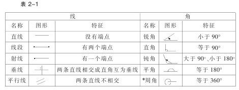
（三）掌握长方形、正方形、平行四边形、三角形、梯形、圆的特征，并且会画长方形、正方形和圆。
（四）理解周长、面积的含义，理解和掌握长方形、正方形和圆的周长的计算公式，理解和掌握长方形、正方形、平行四边形、三角形、梯形、圆的面积计算公式，并且能正确计算简单图形的面积。（见下表）
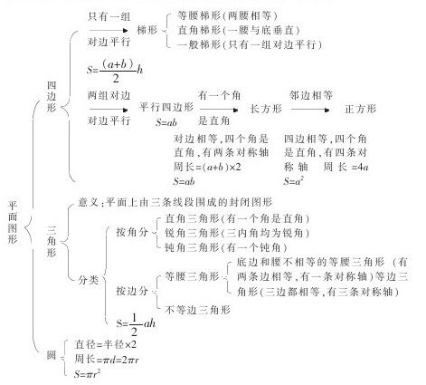
二、学法指导
（一）说一说
1.直线、射线、线段之间的联系和区别。
联系：线段是所在直线或射线上的一部分，射线是它所在直线上的一部分。区别：端点个数不同（线段有两个端点，射线有一个端点，直线无端点）；线段有长度，射线和直线都无长度。
2.说一说平面几何图形的特征在日常生活和生产中的应用。如，自行车的主架为什么用三角形，各种车的车轮为什么用圆形而不用方形等。
（二）议一议
1.角的大小与什么有关？与什么无关？
角的大小要看角的两边叉开的程度，叉开得小，角就小；叉开得大，角就大。角的大小与角的两边画出线段的长短没有关系。
2.射线比直线短的说法对吗？
分析：射线的长度是无限的，直线的长度也是无限的，也就是说射线和直线都不能量出长度。既然不能量出长度，就无法比较出它们的长短了。所以，射线比直线短的说法是不对的。
3.通过圆心且两端都在圆上的线段，叫做直径。这种说法对吗？
分析：我们知道，“直径”是由三个要素有机组成的，缺一不可。一是必须通过圆心，二是必须是线段，三是两端都在圆上。这道题已具备了这三个要素，因此是正确的。
（三）画一画
1.根据三角形的名称和特征画出图形。
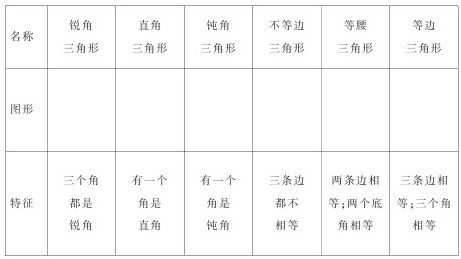
2.分别画出下列图形中AB边上的高。
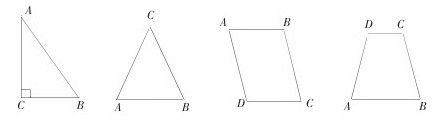
（四）例题选讲
1.用一根长24厘米的铁丝弯成一个正方形，它的面积是多少？
分析：要求正方形的面积，必须知道正方形的边长。因为正方形的四条边相等，又知这根铁丝长24厘米，所以弯成的正方形的边长是（），面积是（）。
2.一个三角形的面积是6.72平方分米，它的底是5.6分米，高是（）分米。
分析：这道题是三角形面积的逆解题，已知面积和底，求高。根据三角形面积的公式
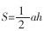
，推得2S=ah，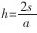
，经计算得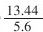
=2.4（分米），括号里应填2.4。这道题如果用列方程解，可化难为易。设这个三角形的高是x分米，根据三角形面积的公式列为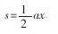
，整理后得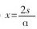
，s和a都是已知数，则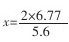
，x=2.4。3.一块半圆形纸板，直径是d厘米，半径是r厘米。它的周长是多少厘米？
想一想：半圆形纸板的周长等于圆周的一半与直径的和。圆周的一半是
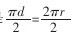
，所以这个半圆形纸板的周长应是（仔r+d）厘米。三、复习巩固
（一）填空
1.如图，∠1=30°，∠2=（），∠3=（），∠4=（）。
2.一个直角三角形两条直角边分别等于一个长方形的长和宽，三角形的面积是长方形的（），长方形的面积是三角形的（）。
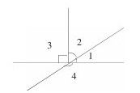
3.在边长4厘米的正方形内画一个最大的圆，这个圆的半径是（），直径是（）。
4.一个正方形的边长的和是36厘米，它的周长是（），它的面积是（）。
5.两个完全相等的三角形可以拼成一个（），所以三角形的面积等于（）面积的（）。
（二）选择（将正确答案的序号写在括号里）
1.用直尺把两点连接起来，就得到一条（）。
①直线②线段③射线
2.一个三角形的最大角是锐角，这个三角形一定是（）三角形。
①锐角②直角③钝角
3.在周长相等的正方形、长方形、圆中，面积最大的是（）。
①长方形②正方形③圆
4.右图中长方形面积（）平行四边形面积。
大于②等于③小于
（三）判断（对的打“√”，错的打“×”）
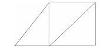
1.大于90°的角叫做钝角。（）
2.不相交的两条直线叫做平行线。（）
3.三角形面积是平行四边形面积的一半。（）
4.任何一条直径都是圆的对称轴。（）
5.一张长12厘米、宽8厘米的长方形纸，剪去一个最大的正方形，剩下的面积是32平方厘米。（）
6.圆的直径增大1米，它的周长就增加3米多一些。（）
（四）计算
1.在周长是24厘米的正方形内，以正方形的边长为直径画一个圆，这个圆的周长是多少厘米？面积是多少平方厘米？
2.求下面各图形的面积。（先在图中量出计算时需要的数据）
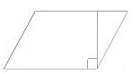
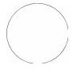
（五）画图
1.画一个长5厘米，宽3厘米的长方形。
2.画一个直径为4厘米的圆，然后用字母标出它的圆心、半径和直径。
3.画出一个正方形的所有对称轴。
（六）应用题
1.一种自行车车轮的外径是0.71米，如果平均每分钟转100周，通过一座大桥一共用了3.5分钟，这座大桥全长多少米？
2.一个农民在一块长90米，宽60米的长方形地里种大白菜，按照行距0.5米，株距0.3米留苗，这块地共收大白菜多少棵？如果每棵大白菜卖1.2元，那么这块地共收入多少元？
3.右图是人民医院包扎用的三角巾。现有一块长18米、宽0.9米的白布，可以做多少块三角巾？
四、实践活动
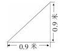
1.量一量学校的篮球场或操场的长和宽，再算出它们的面积。
2.选定一棵树干，通过测量计算出它的横断面积。
立体图形
一、学习内容
（一）掌握长方体、正方体、圆柱体、圆锥体的特征，会计算长方体、正方体、圆柱体的侧面积、表面积和体积及圆锥的体积。
（二）理解体积、容积的意义，认识常用的体积单位。
各类立体图形的特征和计算公式可参阅下表。
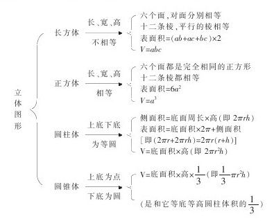
学法指导
（一）说一说
1.说一说各立体图形之间的内在联系及关系。
在长方体中，相交于同一顶点的三条棱长分别叫做长、宽、高。由于立体图形摆的位置不同，长、宽、高是相对而言的。正方体是特殊的长方体。圆锥体体积等于与它等底等高的圆柱体体积的三分之一，这是求圆锥体体积的主要依据。圆柱与圆锥体积的关系，以它们“等底等高”为前提条件。
2.说一说立体图形在日常生活生产中的运用。
（二）议一议
1.一个圆柱体和一个圆锥体底面积与体积分别相等，圆柱的高是6分米，圆锥的高应该是多少分米？
分析：圆锥体体积等于与它等底等高的圆柱体体积的
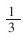
。因此，要使圆锥和圆柱的底面积与体积分别相等，圆锥的高应是圆柱高度的3倍，即6×3=18（分米）。2.把一根长5米，底面是正方形的长方体木料截成相等的四段，表面积比原木料增加54平方分米。原来这根木料的体积是多少立方分米？
分析：解这道题的关键是要知道底面积。根据已知条件，把这根长方体木料截成四段，每截一次，增加两个面，截成四段，实际是截了3次，这样就增加了6个面。6个面共增加表面积54平方分米，每个横截面的面积就可以求出。因为每个横截面的面积与底面积相同，又已知木料的长，就可以求出原来这根木料的体积。
例题选讲。
1.做一个长方体形状的玻璃鱼缸，长8分米，宽4分米，高5分米，需要玻璃多少平方分米？
分析：解答这道题要注意到玻璃鱼缸是没有盖的，只要求出五个面面积的和就可以了。结果是152平方分米，请你自己算一算。
2.将小麦堆成一个圆锥体，底面周长是12.56米，高1.2米，这堆小麦的底面积是多少平方米？如果每立方米小麦重750千克，这堆小麦重多少千克？
分析：要求底面积，先根据底面周长求出半径，然后按圆面积公式算出底面积。再用求出的底面积与高算出体积，最后求出它的重量。解题思路清楚了，请你自己列式计算，看结果是否得底面积12.56平方米，重量9420千克。
三、复习巩固
（一）填空
1.一个正方体棱长的总和是60厘米，它的一条棱长是（），表面积是（），体积是（）。
2.长方体和正方体都有（）个面，（）条棱，（）个顶点。
3.圆柱体上下两个底面是（）的两个圆。侧面展开图是一个长方形，长方形的长是圆柱的（），宽是圆柱的（）。
4.圆锥的体积等于和它（）的圆柱体体积的（）。
（二）选择（将正确答案的序号写在括号里）
1.做一个无盖的铁桶，要计算出至少需用多少铁皮，是求（）。
①侧面积②表面积③侧面积加底面积
2.一个长方体蓄水池里装了水，水的深度就是长方体的（）。
①体积②容积③高
3.一个长方体的长、宽、高各扩大2倍，体积就扩大（）倍。
①2②6③8
4.一个正方体的棱长之和为24分米，它的表面积是（）平方分米。
①6②24③48
5.把一个圆柱体削成一个最大的圆锥体，削去部分的体积是圆柱体积的（）。
①2倍
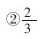
③3倍
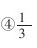
6.制做一个长2.5米，宽2.4米，高4米的不带盖的长方体铁皮箱，至少要用铁皮（）平方米。
①51.2②45.2③39.2
7.有一个长方体蓄水池，计划蓄水500立方米，池长20米，宽10米，至少要挖（）深。
①0.25米②2.5米③25米
8.在周长是24厘米的正方形内，以正方形的边长为直径画一个圆，这个圆的周长是（）厘米。
①24②12③6④18.84
9.一张铁皮长90厘米，宽20厘米，焊接成一个圆柱体的烟筒，计算这个烟筒的侧面积的算式是（）。
①3.14×20×2×90②3.14×20×20③90×20
10.自行车的大齿轮转动一周，小齿轮就转动两周是因为（）。
①速度不同②位置不同③周长不同
（三）判断（对的打“√”，错的打“×”）
1.如果两个长方体的体积相等，那么它们的表面积也一定相等。（）
2.正方体的表面积为18平方分米，把它锯成两个长方体后，表面积增加了6平方分米。（）
3.容积和体积的计算方法相同，但含义不同。（）
4.棱长是6厘米的正方体，它的表面积和体积相等。（）
（四）量一量、折一折、算一算1.右图是一个立方体，量一量它的棱长是（）厘米，算一算它的表面积是（）平方厘米，它的体积是（）立方厘米。
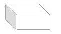
2.用一张纸（大小适当）折一个圆筒形，要使圆筒的周长和它的高相等。想想侧面展开图应是什么形状，长和宽的关系是怎样的？
（五）作图
1.用量角器画出40°、125°的角。再想一想，270°的角可以怎样画？试试看。2.过A点画已知直线的垂线和平行线。
A.
3.画一个半径分别为3厘米、2厘米的同心圆。
4.画一个长为5厘米、宽为3厘米的长方形，并在这个长方形中画一个最大的正方形。
（六）计算
1.求阴影部分的面积。（单位：厘米）
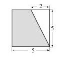
2.下面是一个圆柱体的侧面展开图，求这个圆柱体的体积。（单位：分米）
（七）应用题
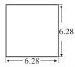
1.小强每天早晨沿着一块长100米，宽50米的长方形草地外围跑4圈，总共用6分钟。小强平均每分钟跑多少米？
2.一块三角形菜地，底长6米，高4米，如果每平方米收白菜18.5千克，这块地可收白菜多少千克？
3.跃进乡计划修一条水渠，上口宽1.8米，下底宽1.4米，深1.5米。这条水渠横截面的面积是多少平方米？
4.一间会议室长11米，宽7.2米。用边长2分米的正方形瓷砖铺地，要用多少块瓷砖？
5.一个长方体形状的水池，长20米，宽15米，深2米。求：①水池的占地面积。②现将水池的四壁与池底抹水泥，求水泥面的面积。③用这个水池蓄每立方米重0.85吨的油，最多能蓄油多少吨？
6.用白铁皮做底面半径是2分米，高15分米的圆柱形铁桶。①做一个这样的桶，至少需要多少铁皮？②铁桶的容积是多少？
7.一节铁皮烟筒长1米，管口直径为1分米，卷叠焊接地方为1厘米。做这样的烟筒100节，至少要用铁皮多少平方米？
8.一个薄圆柱形汽油桶，底面直径是0.4米，高为0.5米。制造这样油桶至少要用多少铁皮？这个油桶最多能装多少升汽油？
9.一间教室长8米、宽6米、高4米，门窗面积18平方米，要粉刷这间教室四壁和屋顶，平均每平方米用涂料250克，一共要买涂料多少千克？
四、实践活动
1.量一个圆柱形茶杯的高和底面直径，算出这个茶杯可以装水多少克？（1立方分米水的质量为1千克）
2.量出数学课本的长、宽、高（厚度），算出书皮的面积。如果包书皮，你怎样设计？至少需要多大面积的纸？
自我监测练习
（下面的题，相信你是能够完成的。正确率达100%的可得一等奖，正确率在80%～99%的可得二等奖，正确率在60%～79%的可得三等奖。做完题以后，统计一下你做题的正确率，看能得到哪种奖项。祝你成功。）
（一）填空
1.看右下图判断：
（1）∠1=（）度，叫做（）；（2）∠4=（）度，叫做（）角；
（3）∠3=40°，则∠2=（）度，它们都是（）角；
（4）∠1+∠2=（）度，叫（）角；
（5）∠1+∠2+∠3+∠4=（）度，叫（）角。
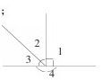
2.两个边长都是1米的正方形，拼成一个长方形。这个长方形的周长是（），面积是（）。
3.一个三角形有（）条高。
4.根据长方形、正方形、平行四边形之间的关系填图。
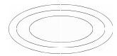
5.圆柱上、下两个底都是（）形，而且它们的面积都（）。
6.下图是一个长方形和它的展开图。在展开图上分别用“上”“下”“前”“后”“左”“右”表明6个面。
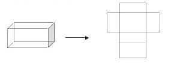
7.用下图五块玻璃片做一个鱼缸。底面（）块，前、后面是（）两块，左、右两侧是（）两块。
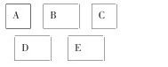
8.用3个1立方分米的正方形摆成一个长方形，这个长方形的长是（）分米，宽是（）分米，表面积是（）平方分米。
9.圆柱体的侧面展开图是（）形或（）形。
10.一个正方形的棱长是2厘米，它的体积是（），所有棱长的和是（），表面积是（）。
（二）判断（对的打“√”，错的打“×”）
1.已知∠1=10°，用放大6倍的放大镜来看，∠1=60°（）
2.等边三角形是特殊的等腰三角形。（）
3.在一个三角形中不可能有两个直角。（）
4.有一个角是直角的平行四边形是长方形。（）
5.三角形的面积是42平方厘米，与它等底边等高的平行四边形的面积是84平方厘米。（）
6.在长为7厘米、宽为2厘米的长方形当中，剪出面积最大的正方形，最多可剪3个。（）
7.三个内角相等的三角形，一定是等边三角形。（）
8.若等腰三角形的顶角为60°，则这个三角形的三条边相等。（）
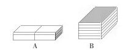
9.现有6盒磁带，用A、B两种方式包装（如下图），哪种方式的包装可以节省包装纸。（）
10.把3个相等的正方体拼成一个长方体，一共减少了原正方体的3个面。（）
（三）选择（将正确答案的序号写在括号里）
1.在整1点时，时针和分针的夹角是（）。
①15°②30°③60°④90°
2.一副三角板可以拼画（）的角。
①65°②75°③85°④95°
3.三角形中最大的一个角是85°，这个三角形按角分类是（）。
①锐角三角形②直角三角形③钝角三角形④三种情况都有可能
4.任何两个面积相等，形状一样的梯形，可以拼成一个（）
①长方形②正方形③平行四边形④等腰梯形
5.一个长方形的长是6厘米，宽是4厘米，从长方形中去掉一个最大的正方形，剩下部分的面积是（）平方厘米。
①8②16③18④24
6.一个油箱，最多可以装汽油180升，我们说这个油箱的（）是180升。
①质量②容积④体积③体积单位